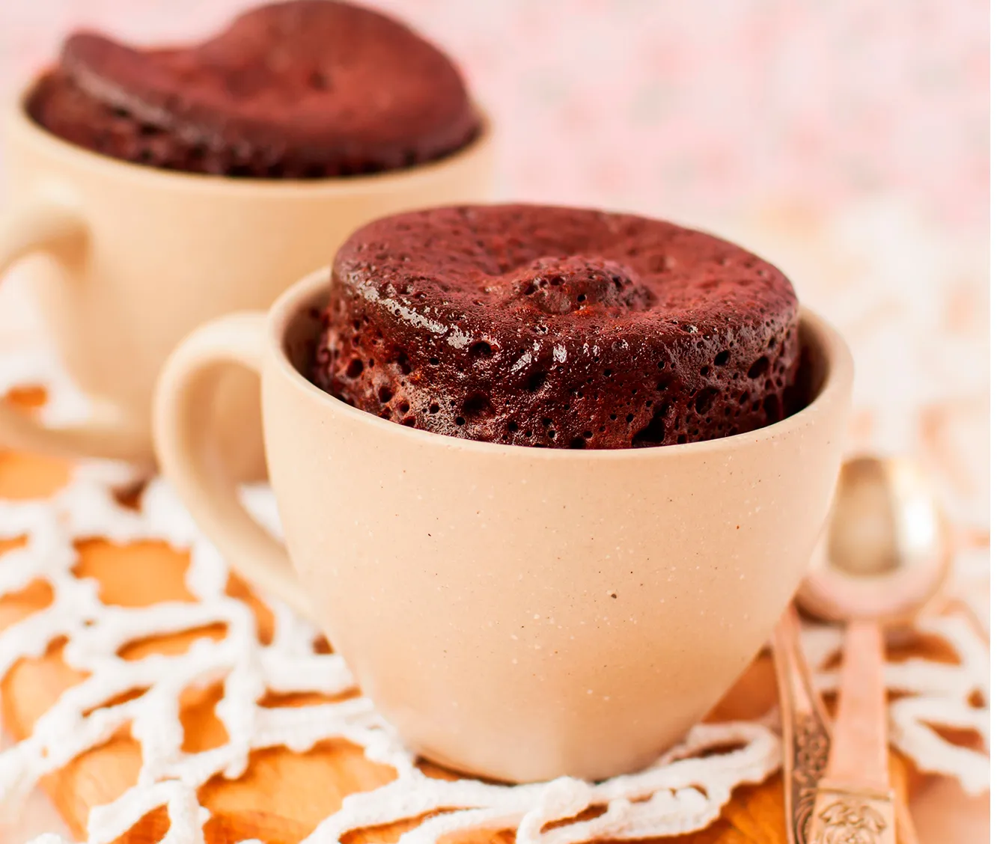
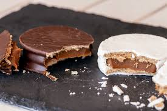

<!DOCTYPE html>
<html lang="pt-BR">
<head>
    <meta charset="UTF-8">
    <meta name="viewport" content="width=device-width, initial-scale=1.0">
    <title>Receitas</title>
</head>
<body>
    
</body>
</html>

<head>
   <title>Fun Meal - Inicio</title>
   <link rel="stylesheet" href="css/reset.css">
   <link rel="stylesheet" href="css/receitas.css">


</head>

<body>
    <header>
        <div class="Inicio">
        <nav>
            <ul>
                <li><a href="index.html">Início</a></li>
                <li><a href="">Receitas</a></li>  
                <li><a href="creditos.html">Creditos</a></li> 
            </ul>
        </nav>
    </div>
    </header>

    <h1>Receitas</h1>

    <div class="receitas">
        <ul class="itens">
            <li ></li>
            <li class="desc"><p><a href="https://www.tudogostoso.com.br/receita/60429-bolo-de-caneca-micro-ondas.html"><B>bolo de caneca:</a></B>Bolo simples de micro-ondas para matar aquela vontade</p></li>
        </ul>
    </div>


    <div class="receitas">
        <ul class="itens">
            <li ></li>
            <li class="desc"><p><a href="https://cybercook.com.br/receitas/doces/receita-de-alfajor-no-palito-com-biscoito-tipo-maria-121370"><B>Alfajor:</B></a>Fácil e rápido de fazer</p></li>
        </ul>
    </div>

    <div class="receitas">
        <ul class="itens">
            <li ></li>
            <li class="desc"><p><a href="https://www.tudogostoso.com.br/receita/110025-cupcake-de-micro-ondas.html"><B>CupCake de micro-ondas:</B></a>CupCake simples e fácil</p></li>
        </ul>
    </div>

    <footer>
        <div class="footer">
          <p>Yasmin Gabriela N-26</p>
          <p>2DSA</p>
        </div>
        </footer>

</body>